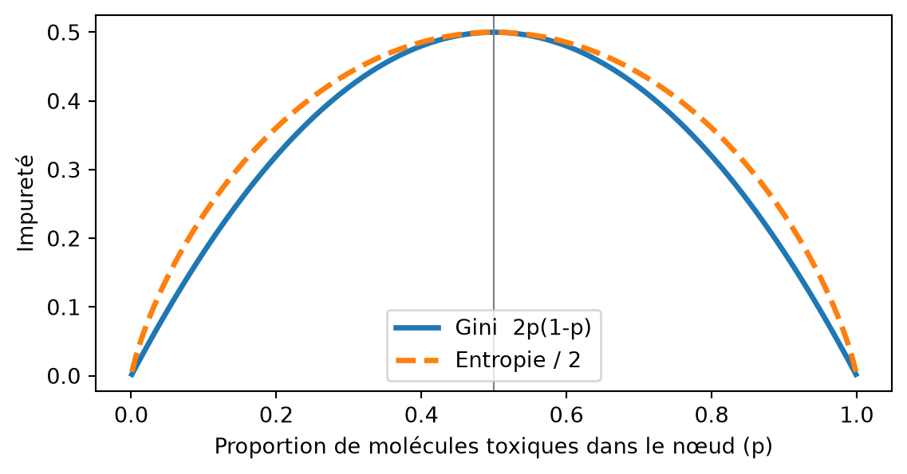
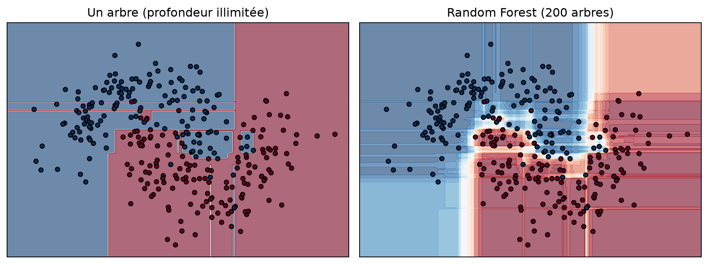

flowchart TB
A["SMILES"] --> B["Descripteurs (RDKit)"]
B --> C["Apprentissage / test"]
C --> D["Random Forest"]
D --> E["Prédiction"]
E --> F["Évaluation (ROC-AUC)"]
F --> G["Importance des variables"]
Séance 1 : Données biologiques et premier modèle prédictif

Notebook de l’atelier — ouvrez-le dans Colab puis Fichier → Enregistrer une copie dans Drive. Version téléchargeable : S1_toxicite_random_forest.ipynb
1. Le problème biologique
Chaque année, des milliers de nouvelles molécules (médicaments, pesticides, cosmétiques, additifs) doivent être évaluées pour leur toxicité. Les tests in vivo sont coûteux, lents et posent des questions éthiques (règle des 3R : remplacer, réduire, raffiner l’expérimentation animale). Le programme Tox21 a donc testé ~8 000 composés sur des essais cellulaires à haut débit.
Nous étudions l’essai NR-AhR : la molécule active-t-elle le récepteur aryl hydrocarbure ? AhR est un facteur de transcription activé par des polluants plans et aromatiques (dioxines, hydrocarbures aromatiques polycycliques de la fumée) ; son activation induit les enzymes CYP1A1/CYP1B1 et est associée à la cancérogénèse et à l’immunotoxicité.
AstuceIdée clé : la relation structure–activité (QSAR)
Des molécules de structures proches ont souvent des activités biologiques proches. Si l’on décrit chaque molécule par des nombres (ses descripteurs), un algorithme peut apprendre la relation entre ces nombres et la toxicité. C’est l’approche QSAR (Quantitative Structure–Activity Relationship), utilisée depuis les années 1960 et aujourd’hui dopée par le machine learning.
2. Notions théoriques essentielles
2.1 Apprentissage supervisé
En apprentissage supervisé, on dispose d’exemples dont on connaît la réponse :
- \(\mathbf{X}\) : la matrice des variables explicatives (features) — une ligne par molécule, une colonne par descripteur ;
- \(\mathbf{y}\) : la cible (target) — ici 1 = toxique, 0 = non toxique.
Le modèle apprend une fonction \(f\) telle que \(f(\mathbf{x}) \approx y\), puis l’applique à de nouvelles molécules. Si \(y\) est une catégorie, c’est une classification ; si c’est un nombre (ex. une IC50), c’est une régression.
2.2 Représenter une molécule par des nombres
Une molécule est d’abord écrite en SMILES (Simplified Molecular Input Line Entry System) : CCO est l’éthanol, c1ccccc1 le benzène (minuscules = atomes aromatiques). RDKit lit ces chaînes et calcule des descripteurs physico-chimiques :
| Descripteur | Définition | Pertinence biologique |
|---|---|---|
| Masse molaire | taille de la molécule (g/mol) | absorption, diffusion |
| logP | coefficient de partage octanol/eau | lipophilie : passage des membranes, bioaccumulation |
| TPSA | surface polaire topologique (Ų) | perméabilité, passage de la barrière hémato-encéphalique |
| Donneurs / accepteurs de liaisons H | groupes –OH, –NH… | interactions avec la cible |
| Cycles aromatiques | nombre de cycles plans conjugués | planéité (ligands d’AhR) |
| Halogènes | atomes F, Cl, Br, I | persistance (polluants organochlorés) |
NoteLa règle des 5 de Lipinski
Un médicament oral a généralement : masse ≤ 500 g/mol, logP ≤ 5, ≤ 5 donneurs et ≤ 10 accepteurs de liaisons H. Ces descripteurs simples résument déjà beaucoup de « biologie » !
Il existe aussi des représentations plus riches : les empreintes moléculaires (fingerprints, ex. Morgan/ECFP : un vecteur de bits indiquant la présence de sous-structures) ou des graphes (atomes = nœuds, liaisons = arêtes) traités par des réseaux de neurones.
2.3 Préparer les données
Un jeu de données réel contient toujours des défauts :
- valeurs manquantes : dans Tox21, une molécule n’a pas été testée dans tous les essais → on retire les lignes sans étiquette pour la cible étudiée ;
- sels et mélanges :
CC(=O)[O-].[Na+]→ on garde le plus gros fragment ; - doublons : la même molécule apparaît plusieurs fois → on la garde une fois ;
- classes déséquilibrées : ~12 % de molécules actives seulement.
On sépare ensuite les données en apprentissage (80 %) et test (20 %). Le jeu de test simule des molécules jamais vues : c’est lui qui mesure la vraie performance. L’option stratify=y conserve la proportion de toxiques dans les deux ensembles.
AttentionFuite de données (data leakage)
Toute information du jeu de test qui « fuit » dans l’apprentissage rend l’évaluation trop optimiste (ex. une même molécule sous deux formes salines différentes dans les deux ensembles). En chimie, on utilise souvent un découpage par squelette (scaffold split) pour tester la capacité du modèle à généraliser à de nouvelles familles chimiques.
2.4 L’arbre de décision
Un arbre de décision pose une suite de questions binaires sur les variables (« nombre de cycles aromatiques ≥ 3 ? »). À chaque nœud, il choisit la question qui sépare le mieux les classes, c’est-à-dire qui réduit le plus l’impureté. L’impureté de Gini d’un nœud contenant une proportion \(p_k\) de chaque classe \(k\) vaut :
\[ G = 1 - \sum_{k} p_k^2 \qquad \text{(en binaire : } G = 2p(1-p)\text{)} \]
\(G = 0\) pour un nœud pur (une seule classe) et \(G = 0{,}5\) pour un mélange 50/50.
Code de la figure
import numpy as np
import matplotlib.pyplot as plt
p = np.linspace(0.001, 0.999, 200)
gini = 2 * p * (1 - p)
entropie = -(p * np.log2(p) + (1 - p) * np.log2(1 - p)) / 2 # mise à l'échelle pour comparaison
plt.figure(figsize=(6, 3.2))
plt.plot(p, gini, lw=2.5, label="Gini 2p(1-p)")
plt.plot(p, entropie, lw=2.5, ls="--", label="Entropie / 2")
plt.xlabel("Proportion de molécules toxiques dans le nœud (p)")
plt.ylabel("Impureté")
plt.axvline(0.5, c="grey", lw=0.8)
plt.legend()
plt.tight_layout()
plt.show()
Un arbre trop profond finit par isoler chaque molécule d’apprentissage : il mémorise au lieu d’apprendre — c’est le sur-apprentissage (overfitting).
2.5 La forêt aléatoire (Random Forest)
Une forêt aléatoire combine des centaines d’arbres rendus différents par deux sources de hasard :
- Bagging : chaque arbre est entraîné sur un échantillon bootstrap (tirage avec remise) des molécules ;
- Sous-ensemble de variables : à chaque nœud, seules \(\approx \sqrt{p}\) variables tirées au hasard sont candidates.
La prédiction finale est la moyenne des probabilités (ou le vote majoritaire) des arbres. Les erreurs individuelles se compensent : la forêt est beaucoup plus stable qu’un arbre seul.
Code de la figure
from sklearn.datasets import make_moons
from sklearn.tree import DecisionTreeClassifier
from sklearn.ensemble import RandomForestClassifier
X, y = make_moons(n_samples=300, noise=0.3, random_state=0)
xx, yy = np.meshgrid(np.linspace(-2, 3, 300), np.linspace(-1.5, 2, 300))
grille = np.c_[xx.ravel(), yy.ravel()]
fig, axes = plt.subplots(1, 2, figsize=(10, 3.8))
modeles = [("Un arbre (profondeur illimitée)", DecisionTreeClassifier(random_state=0)),
("Random Forest (200 arbres)", RandomForestClassifier(n_estimators=200, random_state=0))]
for ax, (titre, m) in zip(axes, modeles):
m.fit(X, y)
zz = m.predict_proba(grille)[:, 1].reshape(xx.shape)
ax.contourf(xx, yy, zz, levels=20, cmap="RdBu_r", alpha=0.6)
ax.scatter(X[:, 0], X[:, 1], c=y, cmap="RdBu_r", edgecolor="k", s=18)
ax.set_title(titre)
ax.set_xticks([]); ax.set_yticks([])
plt.tight_layout()
plt.show()
| Hyperparamètre | Rôle | Effet si on l’augmente |
|---|---|---|
n_estimators |
nombre d’arbres | plus stable, plus lent (rarement nuisible) |
max_depth |
profondeur maximale | plus flexible → risque de sur-apprentissage |
min_samples_leaf |
taille minimale d’une feuille | modèle plus « lisse » |
class_weight="balanced" |
pondère les classes rares | meilleur rappel sur la classe minoritaire |
2.6 Évaluer un classifieur
La matrice de confusion croise la réalité et la prédiction :
| Prédit non toxique | Prédit toxique | |
|---|---|---|
| Réellement non toxique | VN (vrais négatifs) | FP (fausses alertes) |
| Réellement toxique | FN (toxiques manqués) | VP (vrais positifs) |
\[ \text{Précision} = \frac{VP}{VP + FP} \qquad \text{Rappel (sensibilité)} = \frac{VP}{VP + FN} \qquad F_1 = 2\,\frac{\text{Précision} \times \text{Rappel}}{\text{Précision} + \text{Rappel}} \]
Avec 12 % de toxiques, un modèle qui répond toujours « non toxique » obtient 88 % d’exactitude… et ne détecte aucun toxique. Sur des classes déséquilibrées, l’exactitude (accuracy) est trompeuse : regardez le rappel, la précision, le F1, l’exactitude équilibrée (moyenne des rappels de chaque classe) et l’AUC.
Le modèle renvoie une probabilité ; on la compare à un seuil pour décider. La courbe ROC trace le taux de vrais positifs en fonction du taux de faux positifs pour tous les seuils. L’AUC (aire sous la courbe) est la probabilité qu’une molécule toxique tirée au hasard reçoive un score plus élevé qu’une molécule non toxique : 0,5 = hasard, 1 = parfait.
Baisser le seuil (ex. 0,3 au lieu de 0,5) augmente le rappel (moins de toxiques manqués) mais diminue la précision (plus de fausses alertes). En criblage toxicologique, un faux négatif (toxique déclaré sûr) est bien plus grave qu’une fausse alerte, qui sera de toute façon vérifiée expérimentalement : on privilégie le rappel.
2.7 Quelles variables comptent ?
- Importance par impureté (MDI) : somme des diminutions de Gini apportées par chaque variable dans tous les arbres. Rapide, mais biaisée en faveur des variables continues ou à nombreuses valeurs.
- Importance par permutation : on mélange une colonne du jeu de test et on mesure la perte de performance. Plus fiable, et calculée sur des données non vues.
ImportantImportance ≠ causalité
Une variable importante est associée à la toxicité dans ces données : elle n’en est pas forcément la cause. Deux variables corrélées (ex. masse molaire et nombre d’atomes lourds) se partagent l’importance. L’interprétation biologique reste le travail du scientifique.
3. Déroulé de l’atelier
| Temps | Partie du notebook | Activité |
|---|---|---|
| 0:00 – 0:10 | Présentation du problème et de la théorie (cette page) | 🔎 |
| 0:10 – 0:15 | §0 Installation de RDKit, imports | ▶️ Exécuter |
| 0:15 – 0:35 | §1 Chargement de Tox21, valeurs manquantes | ▶️ Exécuter 🔎 Q1 |
| 0:35 – 0:50 | §2 Nettoyage : cible, sels, doublons (exercice 1), déséquilibre | ✍️ Modifier 🔎 Q2 |
| 0:50 – 1:05 | §3 Descripteurs RDKit, histogrammes, corrélations | ▶️ Exécuter 🔎 Q3 |
| 1:05 – 1:35 | §4 Modèle idiot, Random Forest, confusion, ROC, seuil (exercice 2) | ✍️ Modifier 🔎 Q4 |
| 1:35 – 1:45 | §5 Importance des variables (Gini, permutation) | ▶️ Exécuter 🔎 Q5 |
| 1:45 – 2:00 | §6-7 Nouvelles molécules, pipeline final, défis | ✍️ Modifier |
Code clé à retenir
from sklearn.model_selection import train_test_split
from sklearn.ensemble import RandomForestClassifier
from sklearn.metrics import ConfusionMatrixDisplay, roc_auc_score
X_train, X_test, y_train, y_test = train_test_split(
X, y, test_size=0.2, stratify=y, random_state=42) # 1. séparer
rf = RandomForestClassifier(n_estimators=200, max_depth=12,
class_weight="balanced", random_state=42)
rf.fit(X_train, y_train) # 2. apprendre
proba = rf.predict_proba(X_test)[:, 1] # 3. prédire (probabilités)
print("AUC :", roc_auc_score(y_test, proba)) # 4. évaluer
ConfusionMatrixDisplay.from_estimator(rf, X_test, y_test)4. Exercices et défis
- Exercice 1 — Doublons : compter et supprimer les SMILES dupliqués avec
duplicated()/drop_duplicates(). - Exercice 2 — Seuil de décision : faire varier le seuil de 0,1 à 0,9 et observer le compromis précision/rappel.
- Défi 1 : appliquer le pipeline à d’autres essais (
SR-MMP,SR-p53,NR-ER…) et comparer les AUC. - Défi 2 : tracer l’AUC apprentissage vs test en fonction de
max_depthpour visualiser le sur-apprentissage.
NoteÉléments de correction
- Doublons :
df.duplicated(subset="smiles").sum()puisdf = df.drop_duplicates(subset="smiles"). Après le retrait des sels, plusieurs formes salines d’une même molécule deviennent identiques. - Seuil : au seuil 0,5, on détecte ≈ 72 % des toxiques (AUC test ≈ 0,88) ; à 0,3, le rappel monte vers 85 % mais la précision chute (≈ 30 %). Avec
class_weight="balanced", les probabilités de la classe rare sont déjà « gonflées » : le seuil qui maximise le F1 peut donc être supérieur à 0,5 (≈ 0,65 ici). Le bon seuil dépend de l’objectif (ne rater aucun toxique ou limiter les fausses alertes), pas d’une règle universelle. - Défi 1 :
SR-MMP(stress mitochondrial, AUC ≈ 0,91) etNR-AhR(≈ 0,88) sont les mieux prédits par ces descripteurs simples ;NR-ERetSR-ARE(≈ 0,76) sont plus difficiles, car l’activité dépend de détails fins de la structure (complémentarité avec la poche du récepteur, groupes réactifs) que des descripteurs globaux ne capturent pas. - Défi 2 : l’AUC d’apprentissage tend vers 1 quand la profondeur augmente, alors que l’AUC de test plafonne puis stagne : l’écart croissant est la signature du sur-apprentissage.
- Importance :
cycles_aromatiquesetfraction_sp3ressortent nettement pour AhR (les actifs ont en moyenne ≈ 2 cycles aromatiques contre ≈ 1, et une fraction sp3 de 0,20 contre 0,50), aveclogP— cohérent avec des ligands plans, aromatiques et lipophiles (une faible fraction sp3 = molécule plane). - Nouvelles molécules : les six exemples sont en réalité déjà présents dans Tox21 (dioxine, benzo[a]pyrène et β-naphtoflavone y sont actifs ; caféine, aspirine et paracétamol inactifs). Le paracétamol reçoit pourtant une probabilité élevée (≈ 0,7) : c’est un faux positif — avec seulement 12 descripteurs globaux, un petit cycle aromatique plan suffit à « ressembler » aux actifs. Leçon : avant d’annoncer une prédiction sur une molécule « nouvelle », vérifier qu’elle n’était pas dans les données d’apprentissage.
5. Livrable
6. Testez-vous
AstuceQ1. Pourquoi évaluer le modèle sur un jeu de test séparé ?
Parce que les performances sur les données d’apprentissage sont optimistes : le modèle les a déjà vues (il peut les avoir mémorisées). Seul un jeu jamais vu estime la performance sur de nouvelles molécules.
AstuceQ2. Un modèle obtient 90 % d’exactitude sur Tox21 NR-AhR. Est-ce un bon modèle ?
Pas forcément : un modèle constant « non toxique » obtient déjà ~88 %. Il faut regarder le rappel des toxiques, la précision, le F1 et l’AUC.
AstuceQ3. Quelle est la différence entre un arbre de décision et une forêt aléatoire ?
La forêt agrège de nombreux arbres entraînés sur des échantillons bootstrap et des sous-ensembles aléatoires de variables. Elle réduit la variance (instabilité) d’un arbre unique et sur-apprend beaucoup moins.
AstuceQ4. En toxicologie, faut-il privilégier la précision ou le rappel ?
Le rappel : manquer une molécule toxique (faux négatif) est plus grave qu’une fausse alerte, qui sera vérifiée par un test expérimental.
AstuceQ5. Le modèle indique que
logP est très important. Peut-on conclure que la lipophilie cause la toxicité ?
Non. L’importance mesure une association dans ces données. La lipophilie peut être corrélée à d’autres propriétés (aromaticité, taille) ou refléter un biais de composition de la chimiothèque. Seules des expériences permettent de conclure à une causalité.
7. Limites et bonnes pratiques
- Les descripteurs globaux ignorent la géométrie 3D et les détails de la poche de liaison du récepteur.
- Le domaine d’applicabilité est limité : le modèle n’est fiable que pour des molécules semblables à celles de Tox21.
- Un essai cellulaire in vitro n’est pas la toxicité chez l’humain (métabolisme, dose, exposition).
- Toujours comparer à une référence simple (modèle constant, régression logistique) avant de conclure qu’un modèle est utile.
8. Pour aller plus loin
- Huang R. et al. (2016). Modelling the Tox21 10K chemical profiles for in vivo toxicity prediction and mechanism characterization. Nature Communications, 7, 10425.
- Wu Z. et al. (2018). MoleculeNet: a benchmark for molecular machine learning. Chemical Science, 9, 513-530.
- Breiman L. (2001). Random Forests. Machine Learning, 45, 5-32.
- Documentation : Scikit-learn — Ensembles · RDKit — Getting Started